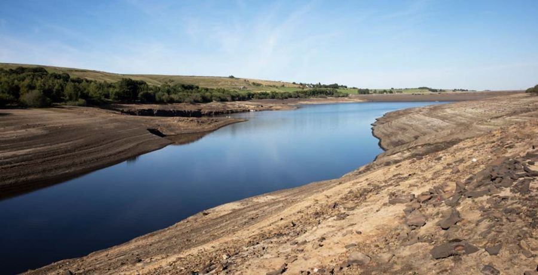

Estiaje
El cambio climático y las altas temperaturas son los principales elementos que provocan el estiaje, que se trata de un periodo en el que el cauce de los ríos, lagos, acuíferos y presas, entre otros cuerpos de agua registran el nivel más bajo de concentración.